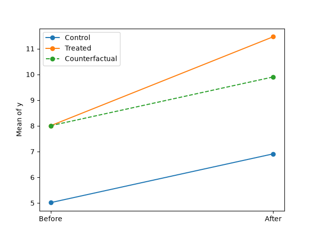

第 9 章: プーリング・データと差分の差分¶
9.1 この章の地図¶
政策や出来事の効果を測りたいとき、「処置の前後」だけを比べても、時間とともに起きる共通の変化（景気など）が混ざります。「処置を受けた群と受けなかった群」を比べても、もともとの群の差が混ざります。差分の差分（DiD）は、2 つを組み合わせて、両方を除きます。この章では、DiD が、第 7 章の交差項の回帰と、ちょうど一致することを確かめます。後半では、同じ個人を何期も追うデータ（パネル・データ）を扱い、個人ごとの観測されない違い（個人効果）が x と相関すると、プーリング OLS が偏ること、1 階差分推定が、個人効果を消して直すことを、シミュレーションで見ます。

| 項目 | 内容 |
|---|---|
| 計量経済学の題材 | 独立なプーリング・データ、差分の差分（DiD）、平行トレンドの仮定、パネル・データ、個人効果、1 階差分推定 |
| 使う Python の機能 | pandas の groupby・unstack・diff、numpy の repeat・tile、データフレームの結合 |
| 新しく導入するライブラリ | なし |
| 完成形 | group_period_means、did_estimate、did_regression、draw_did_sample、draw_panel、first_difference、first_difference_estimate、pooled_estimate、panel_estimators |
| ファイル | 実装: lib/chapter09/did.py、lib/chapter09/plot.py（図）／テスト: test/chapter09/test_did.py、test/chapter09/test_plot.py（自分で書くときは、practice/chapter09/ に、同じ名前で作ります） |
| データ | 手計算用の 8 個・6 個の観測値と、母集団の式から作った乱数 |
計量経済学の式とコードの対応¶
| 計量経済学 | 式 | コード |
|---|---|---|
| DiD | (ȳ_処置,後 − ȳ_処置,前) − (ȳ_対照,後 − ȳ_対照,前) | did_estimate(df) |
| DiD の回帰 | y = α + β₁·treated + β₂·post + δ·(treated·post) + u | did_regression(df) |
| パネルの母集団の式 | y_it = α + β·x_it + a_i + u_it | draw_panel(entities, periods, correlation, rng) |
| 1 階差分 | Δy_it = β·Δx_it + Δu_it（a_i が消える） | first_difference_estimate(panel) |
| プーリング OLS | y を x で回帰（個人を区別しない） | pooled_estimate(panel) |
記号について: δ は処置の効果（DiD）、a_i は個人 i ごとの観測されない効果（個人効果）、i は個人、t は期です。一覧は、記号について を参照してください。
前提とする章¶
| できること | 章 |
|---|---|
交差項 with_interaction、ダミー変数の係数 |
第 7 章 |
重回帰 fit_ols、欠落変数による偏り |
第 3 章 |
9.2 準備¶
cd apps/econometrics-programming/python
uv sync
uv run pytest test/chapter09
20 passed
自分でコードを書くときは、practice/chapter09/ に、完成形と同じ名前（did.py・test_did.py）のファイルを作ります。
9.3 予想する¶
ある政策を、処置群にだけ実施しました。y の平均は、処置群が 10（前）→ 15（後）、対照群が 8（前）→ 10（後）です。
- 処置群の「前後の差」は 5 です。政策の効果は、5 ですか。DiD は、いくつですか
- 対照群の前後の差（2）は、何を表していると考えますか
- 個人ごとの効果 a_i が、説明変数 x と正の相関を持つパネルで、y を x で回帰（プーリング OLS）すると、傾きは、真の値より大きくなりますか、小さくなりますか
- 個人ごとに 1 期前との差を取ってから回帰すると、a_i は、どうなりますか
9.4 差分の差分とパネルの考え方¶
差分の差分（DiD）¶
2 つの群（処置群・対照群）と 2 つの時点（前・後）の、4 つの平均を使います。
| 前 | 後 | 変化 | |
|---|---|---|---|
| 対照群 | 8 | 10 | +2 |
| 処置群 | 10 | 15 | +5 |
処置群の変化（+5）には、処置の効果と、共通の時間変化が含まれます。対照群の変化（+2）は、共通の時間変化だけです。差を取ると、効果が残ります: DiD = 5 − 2 = 3。
この結論には、平行トレンドの仮定が必要です。「処置がなければ、処置群も、対照群と同じだけ（+2）変化したはずだ」という仮定です。図の点線は、この反事実です。
回帰で書く¶
y = α + β₁·treated + β₂·post + δ·(treated·post) + u を推定すると、交差項の係数 δ が、DiD に、ちょうど等しくなります。α は対照群の処置前の平均、β₁ は処置前の群の差、β₂ は対照群の時間変化です。回帰で書くと、標準誤差・検定・説明変数の追加が、できます。
パネル・データと個人効果¶
同じ個人を、何期も追うデータが、パネル・データです。y_it = α + β·x_it + a_i + u_it の a_i（個人効果）は、能力・体質のような、観測されない、個人に固有の要因です。a_i が x_it と相関すると、a_i を誤差項に入れた回帰（プーリング OLS）は、偏ります（欠落変数バイアス。第 3 章・第 11 章）。
1 階差分¶
各個人で、1 期前との差を取ります: Δy_it = β·Δx_it + Δu_it。個人効果 a_i は、期をまたいで同じなので、差で消えます。消えたものは、x と相関していても、問題になりません。
9.5 プログラミング¶
Red: 差分の差分の手計算¶
予想 1 の手計算です。各セルに 2 個ずつの観測値を置きます（平均が 8、10、10、15 になるように）。
import numpy as np
import pandas as pd
import pytest
from lib.chapter09.did import did_estimate, did_regression, group_period_means
CELLS = pd.DataFrame(
{
"y": [7, 9, 9, 11, 9, 11, 14, 16],
"treated": [0, 0, 0, 0, 1, 1, 1, 1],
"post": [0, 0, 1, 1, 0, 0, 1, 1],
},
dtype=float,
)
def test_2_x_2の平均() -> None:
means = group_period_means(CELLS)
assert means.to_numpy().tolist() == [[8, 10], [10, 15]]
assert list(means.index) == ["control", "treated"]
assert list(means.columns) == ["before", "after"]
def test_差分の差分の手計算() -> None:
assert did_estimate(CELLS) == pytest.approx((15 - 10) - (10 - 8))
def test_回帰の交差項の係数はDiDにちょうど等しい() -> None:
coefficients = did_regression(CELLS).coefficients
assert coefficients["treated:post"] == pytest.approx(3)
assert coefficients["const"] == pytest.approx(8)
assert coefficients["treated"] == pytest.approx(10 - 8)
assert coefficients["post"] == pytest.approx(10 - 8)
Green: DiD を実装する¶
def group_period_means(df: pd.DataFrame) -> pd.DataFrame:
"""処置群・対照群の、処置の前後の、y の平均（2 × 2 の表）。"""
table = df.groupby(["treated", "post"])["y"].mean().unstack()
table.index = ["control", "treated"]
table.columns = ["before", "after"]
return table
def did_estimate(df: pd.DataFrame) -> float:
"""差分の差分 = (処置群の変化) − (対照群の変化)。"""
means = group_period_means(df)
change = means["after"] - means["before"]
return float(change["treated"] - change["control"])
def did_regression(df: pd.DataFrame) -> OlsResult:
"""y を、処置群ダミー・処置後ダミー・その交差項で回帰する。交差項の係数が DiD。"""
x = pd.DataFrame(
{
"treated": df["treated"],
"post": df["post"],
"treated:post": with_interaction(df["treated"], df["post"]),
}
)
return fit_ols(df["y"], x)
from lib.chapter09.did import did_estimate, did_regression, group_period_means
print(group_period_means(CELLS))
print(did_estimate(CELLS))
print(did_regression(CELLS).coefficients.to_dict())
before after
control 8.0 10.0
treated 10.0 15.0
3.0
{'const': 8.0, 'treated': 2.0, 'post': 2.0, 'treated:post': 3.0}
DiD は 3 で、効果は、前後の差の 5 ではありません（予想 1）。回帰の係数も、treated:post が 3、const が対照群の処置前の平均 8、treated が処置前の群の差 2、post が対照群の時間変化 2 で、すべて、4 つの平均から作った値と一致します（予想 2）。
乱数の標本で、効果を復元する¶
各セルに n 個の標本を作ります。母集団の式は、y = 5 + 3·treated + 2·post + 効果·treated·post + u です。群の差 3 と、時間変化 2 は、DiD で除かれます。
def draw_did_sample(n: int, effect: float, rng: np.random.Generator) -> pd.DataFrame:
"""2 × 2（処置群・対照群 × 処置の前後）に、n 個ずつの標本を作る。
y = 5 + 3·treated + 2·post + effect·treated·post + u（u は標準正規）。
群の差 3 と、共通の時間変化 2 は、DiD で除かれる。
"""
treated = np.repeat([0.0, 0.0, 1.0, 1.0], n)
post = np.repeat([0.0, 1.0, 0.0, 1.0], n)
y = 5 + 3 * treated + 2 * post + effect * treated * post
return pd.DataFrame(
{"y": y + rng.standard_normal(4 * n), "treated": treated, "post": post}
)
def test_乱数の標本でも回帰の交差項はDiDに等しい() -> None:
sample = draw_did_sample(100, 1.5, np.random.default_rng(1))
assert did_regression(sample).coefficients["treated:post"] == pytest.approx(
did_estimate(sample)
)
def test_標本の形() -> None:
sample = draw_did_sample(10, 1.5, np.random.default_rng(0))
assert len(sample) == 40
assert sample.groupby(["treated", "post"]).size().tolist() == [10, 10, 10, 10]
def test_処置の効果は標準誤差の4倍以内で復元される() -> None:
sample = draw_did_sample(500, 1.5, np.random.default_rng(0))
result = did_regression(sample)
assert (
abs(result.coefficients["treated:post"] - 1.5)
< 4 * (result.standard_errors["treated:post"])
)
assert (
abs(result.coefficients["treated"] - 3) < 4 * result.standard_errors["treated"]
)
assert abs(result.coefficients["post"] - 2) < 4 * result.standard_errors["post"]
def test_効果が0なら差分の差分は0に近い() -> None:
sample = draw_did_sample(2000, 0.0, np.random.default_rng(0))
assert did_estimate(sample) == pytest.approx(0, abs=0.1)
def test_群の差と共通の時間変化だけでは差分の差分は0() -> None:
df = CELLS.copy()
df["y"] = 5 + 3 * df["treated"] + 2 * df["post"]
assert did_estimate(df) == pytest.approx(0)
from lib.chapter09.did import draw_did_sample
sample = draw_did_sample(500, 1.5, np.random.default_rng(0))
result = did_regression(sample)
print(round(did_estimate(sample), 4))
print(result.coefficients.round(4).to_dict())
print(result.standard_errors.round(4).to_dict())
1.4249
{'const': 4.9731, 'treated': 3.0775, 'post': 1.9577, 'treated:post': 1.4249}
{'const': 0.0447, 'treated': 0.0632, 'post': 0.0632, 'treated:post': 0.0894}
DiD は 1.4249 で、真の効果 1.5 から、標準誤差 0.0894 の、1 つ分弱だけずれています。群の差（3.0775、真の値 3）と時間変化（1.9577、真の値 2）も、近い値です。
図¶
def ys(line: Any) -> list[float]:
values: Any = line.get_ydata()
return [float(v) for v in values]
def test_処置群と対照群と反事実を描く() -> None:
ax = plot_did(group_period_means(CELLS)).axes[0]
assert [line.get_label() for line in ax.lines] == [
"Control",
"Treated",
"Counterfactual",
]
assert ys(ax.lines[0]) == [8, 10]
assert ys(ax.lines[1]) == [10, 15]
def test_反事実は処置群の処置前から対照群と同じだけ動く() -> None:
ax = plot_did(group_period_means(CELLS)).axes[0]
assert ys(ax.lines[2]) == pytest.approx([10, 12])
assert ax.lines[2].get_linestyle() == "--"
def plot_did(means: pd.DataFrame) -> Figure:
"""処置群・対照群の平均と、反事実（処置がなかったときの処置群）を描く。
反事実は、処置群の処置前の平均から、対照群と同じだけ動く（平行トレンド）。
"""
values = means.to_numpy(dtype=float) # 1 行目が対照群、2 行目が処置群
control, treated = values[0], values[1]
fig, ax = plt.subplots()
ax.plot([0, 1], control, marker="o", label="Control")
ax.plot([0, 1], treated, marker="o", label="Treated")
ax.plot(
[0, 1],
[treated[0], treated[0] + control[1] - control[0]],
"--",
marker="o",
label="Counterfactual",
)
ax.set_xticks([0, 1], ["Before", "After"])
ax.set_ylabel("Mean of y")
ax.legend()
plt.close(fig)
return fig
パネルの 1 階差分¶
3 人の、2 期のパネルで、手計算します。y = a_i + 2·x（真の傾き 2）で、a は 1、6、−1（個人効果）です。
PANEL = pd.DataFrame(
{
"entity": [0, 0, 1, 1, 2, 2],
"time": [0, 1] * 3,
"x": [1, 2, 2, 4, 0, 3],
"y": [3, 5, 10, 14, -1, 5],
},
dtype=float,
)
def first_difference(panel: pd.DataFrame) -> pd.DataFrame:
"""個人ごとに、1 期前との差（Δy・Δx）を取る。最初の期は、差が取れないので除く。"""
ordered = panel.sort_values(["entity", "time"])
differences = ordered.groupby("entity")[["x", "y"]].diff().dropna()
return differences.rename(columns={"x": "dx", "y": "dy"})
def first_difference_estimate(panel: pd.DataFrame) -> float:
"""1 階差分推定: Δy を Δx で回帰した傾き。個人ごとの効果 a が差で消える。"""
d = first_difference(panel)
return float(fit_ols(d["dy"], d[["dx"]]).coefficients["dx"])
def pooled_estimate(panel: pd.DataFrame) -> float:
"""プーリング OLS: 個人を区別せず、y を x で回帰した傾き。"""
return float(fit_ols(panel["y"], panel[["x"]]).coefficients["x"])
def test_1階差分は個人ごとの前期との差() -> None:
d = first_difference(PANEL.sample(frac=1, random_state=0))
assert d["dx"].tolist() == [1, 2, 3]
assert d["dy"].tolist() == [2, 4, 6]
assert list(d.columns) == ["dx", "dy"]
def test_1階差分推定は個人の効果を除いて真の傾きを復元する() -> None:
assert first_difference_estimate(PANEL) == pytest.approx(2)
def test_プーリングOLSは個人の効果のため偏る() -> None:
assert pooled_estimate(PANEL) == pytest.approx(3.2)
from lib.chapter09.did import first_difference, first_difference_estimate, pooled_estimate
print(first_difference(PANEL))
print(first_difference_estimate(PANEL), pooled_estimate(PANEL))
dx dy
1 1.0 2.0
3 2.0 4.0
5 3.0 6.0
2.0 3.2
差を取ると、Δy = 2·Δx（ちょうど）で、傾きは 2.0 です。個人効果 a は、差で消えました。プーリング OLS は 3.2 で、真の値 2 より大きく偏ります（予想 3）。x が大きい個人は、a も大きいためです（a = 1、6、−1 に対し、x の平均は 1.5、3、1.5）。
乱数のパネルで、偏りを確かめる¶
def draw_panel(
entities: int, periods: int, correlation: float, rng: np.random.Generator
) -> pd.DataFrame:
"""個人ごとの効果 a が x と相関するパネル・データ。真の傾きは 1。
x = correlation·a + v、y = 1 + x + a + 0.5·u。
"""
a = np.repeat(rng.standard_normal(entities), periods)
x = correlation * a + rng.standard_normal(entities * periods)
y = 1 + x + a + 0.5 * rng.standard_normal(entities * periods)
return pd.DataFrame(
{
"entity": np.repeat(np.arange(entities), periods),
"time": np.tile(np.arange(periods), entities),
"x": x,
"y": y,
}
)
def panel_estimators(
entities: int,
periods: int,
correlation: float,
repetitions: int,
rng: np.random.Generator,
) -> pd.DataFrame:
"""パネルを作り直して、プーリング OLS と 1 階差分推定を繰り返す（真の傾きは 1）。"""
rows = []
for _ in range(repetitions):
panel = draw_panel(entities, periods, correlation, rng)
rows.append((pooled_estimate(panel), first_difference_estimate(panel)))
return pd.DataFrame(rows, columns=["pooled", "first_difference"])
x = 相関 × a + v、y = 1 + x + a + 0.5·u（真の傾きは 1）。個人 200 人、2 期、相関 0 と 1 で、500 回繰り返します。理論上、プーリング OLS の傾きは、1 + 相関 ÷ (相関² + 1) に近づきます（相関 1 で 1.5）。
def test_パネルの形() -> None:
panel = draw_panel(10, 4, 0.5, np.random.default_rng(0))
assert len(panel) == 40
assert list(panel.columns) == ["entity", "time", "x", "y"]
assert panel["entity"].nunique() == 10
assert panel.groupby("entity")["time"].apply(list).iloc[0] == [0, 1, 2, 3]
def test_個人の効果は期をまたいで同じ() -> None:
a = draw_panel(5, 3, 1.0, np.random.default_rng(0))
b = draw_panel(5, 3, 1.0, np.random.default_rng(0))
pd.testing.assert_frame_equal(a, b)
def test_相関があるとプーリングは偏り差分は偏らない() -> None:
table = panel_estimators(200, 2, 1.0, 500, np.random.default_rng(0))
se = table.std() / 500**0.5
assert abs(table["pooled"].mean() - 1.5) < 4 * se["pooled"]
assert abs(table["first_difference"].mean() - 1.0) < 4 * se["first_difference"]
def test_相関がなければプーリングも偏らない() -> None:
table = panel_estimators(200, 2, 0.0, 500, np.random.default_rng(0))
se = table.std() / 500**0.5
assert abs(table["pooled"].mean() - 1.0) < 4 * se["pooled"]
assert abs(table["first_difference"].mean() - 1.0) < 4 * se["first_difference"]
def test_期が多くても1階差分は偏らない() -> None:
table = panel_estimators(100, 5, 1.0, 200, np.random.default_rng(0))
se = table.std() / 200**0.5
assert abs(table["first_difference"].mean() - 1.0) < 4 * se["first_difference"]
from lib.chapter09.did import panel_estimators
for correlation in (0.0, 1.0):
table = panel_estimators(200, 2, correlation, 500, np.random.default_rng(0))
print(correlation, table.mean().round(4).to_dict(), table.std().round(4).to_dict())
0.0 {'pooled': 0.9992, 'first_difference': 0.9998} {'pooled': 0.053, 'first_difference': 0.0346}
1.0 {'pooled': 1.4974, 'first_difference': 0.9998} {'pooled': 0.0328, 'first_difference': 0.0346}
列は、推定値の平均と標準偏差です。相関 0 では、どちらも偏らず（0.9992 と 0.9998）、1 階差分のほうが、ばらつきが小さい（0.0346 < 0.053。個人効果が差で消えるぶん）。相関 1 では、プーリング OLS は 1.4974 と、理論値 1.5 のとおりに偏り、1 階差分は 0.9998 で、偏りません（予想 3・4）。
実行結果¶
uv run pytest test/chapter09
20 passed
9.6 規則で言うと¶
- DiD は、2 つの差の差。 群の違いと、共通の時間変化を、同時に除く。回帰では、交差項の係数が、DiD に、ちょうど等しい
- DiD の根拠は、平行トレンドの仮定。 処置がなければ、処置群も、対照群と同じだけ動いたはず、という仮定は、データでは確かめられない（処置前の複数時点で、傾向を比べる）
- 個人効果が x と相関すると、プーリング OLS は偏る。 個人内の変化（差分）だけを使うと、個人効果が消える
混同しやすい点を、表にまとめます。
| 混同しやすい点 | 違い |
|---|---|
| 前後の差 と 効果 | 前後の差は、効果と共通の時間変化の和。対照群の変化を引いて、効果が残る |
| プーリング・データ と パネル・データ | プーリング・データは、時点ごとに、別の個人の標本。パネル・データは、同じ個人を追う。個人効果の問題は、パネルで生じ、差分・固定効果で直せる |
| 1 階差分 と 固定効果 | 2 期間なら、定数項なしの 1 階差分が、固定効果と、ちょうど一致する（第 10 章）。3 期間以上では、結果が違う |
この方法が成り立たない場面¶
- 平行トレンドが成り立たないと、DiD は偏ります。 処置群が、もともと成長が速い（政策が、成長しそうな地域に導入された）場合、効果を、過大に見積もります
- 1 階差分は、時間とともに変わらない変数の効果を、推定できません。 性別・生まれた地域のような変数は、差で消えます
- 誤差が、時間を通じて相関していると、標準誤差が狂います。 同じ個人を繰り返し観測したデータでは、クラスター標準誤差が必要です（第 10 章）
9.7 練習問題¶
| 種類 | 問題 |
|---|---|
| 想起 | 本文を閉じて、「処置群 10 → 15、対照群 8 → 10 のとき、DiD が 3」になるテストを書いてください |
| 生成 | 解説を見る前に、反事実（処置がなければ、処置後に、処置群の平均がいくつだったか）を返す counterfactual_after(df) を、テストから書いてください。反事実は、処置群の処置前の平均に、対照群の変化を足した値です。手計算の例では、いくつですか。実際の処置後の平均との差は、DiD と一致しますか |
| 多様 | 共通の時間変化（処置後に、全員に足される値）を 2 から 5 に変えると、DiD は変わりますか。先に予想してから、確かめてください |
| 交互 | 第 8 章の robust_standard_errors で、DiD の回帰の、交差項の標準誤差（HC1）を求めてください。通常の標準誤差と比べて、どうですか |
解答（先に自分で取り組んでから、開いてください）
想起:
def test_差分の差分の手計算() -> None:
df = pd.DataFrame(
{
"y": [7, 9, 9, 11, 9, 11, 14, 16],
"treated": [0, 0, 0, 0, 1, 1, 1, 1],
"post": [0, 0, 1, 1, 0, 0, 1, 1],
},
dtype=float,
)
assert did_estimate(df) == pytest.approx(3)
生成: 反事実は 10 + (10 − 8) = 12 です。実際の処置後の平均 15 との差は 3 で、DiD と一致します。
def counterfactual_after(df):
means = group_period_means(df)
control_change = means.loc["control", "after"] - means.loc["control", "before"]
return float(means.loc["treated", "before"] + control_change)
def test_反事実と実際の処置後の平均の差はDiD() -> None:
df = pd.DataFrame(
{
"y": [7, 9, 9, 11, 9, 11, 14, 16],
"treated": [0, 0, 0, 0, 1, 1, 1, 1],
"post": [0, 0, 1, 1, 0, 0, 1, 1],
},
dtype=float,
)
assert counterfactual_after(df) == pytest.approx(12)
actual = group_period_means(df).loc["treated", "after"]
assert actual - counterfactual_after(df) == pytest.approx(did_estimate(df))
多様: DiD は、変わりません。共通の時間変化は、処置群と対照群の、両方の変化に同じだけ足されるので、差で消えます。
def test_共通の時間変化を変えてもDiDは変わらない() -> None:
sample = draw_did_sample(100, 1.5, np.random.default_rng(0))
shifted = sample.assign(y=sample["y"] + 3 * sample["post"])
assert did_estimate(shifted) == pytest.approx(did_estimate(sample))
交互: 均一分散のデータなので、頑健な標準誤差は、通常のものに近い値です。
def test_DiDの交差項の頑健な標準誤差は通常の標準誤差に近い() -> None:
sample = draw_did_sample(500, 1.5, np.random.default_rng(0))
x = pd.DataFrame(
{
"treated": sample["treated"],
"post": sample["post"],
"treated:post": with_interaction(sample["treated"], sample["post"]),
}
)
robust = robust_standard_errors(sample["y"], x)["treated:post"]
classical = fit_ols(sample["y"], x).standard_errors["treated:post"]
assert robust == pytest.approx(classical, rel=0.1)
9.8 振り返り¶
- 予想した 4 つは、当たりましたか。前後の差を効果と考えてしまう間違いを、説明できますか
- 平行トレンドの仮定が崩れる例を、思いつけますか
- プーリング OLS が偏る理由を、個人効果で、説明できますか
9.9 まとめ¶
- DiD を、4 つの平均から求め（手計算 3）、回帰の交差項の係数が、ちょうど一致することを確かめた。乱数の標本で、真の効果 1.5 を、1.4249（標準誤差 0.0894）と復元した
- 個人効果が x と相関するパネルでは、プーリング OLS が偏り（手計算の例で 3.2、真の値 2。シミュレーションで 1.4974、理論値 1.5）、1 階差分は偏らない（2.0、0.9998）
- 次の章では、個人効果を除く、もう 1 つの方法（固定効果）と、除かずに扱う方法（ランダム効果）を比べ、実際のデータで試します